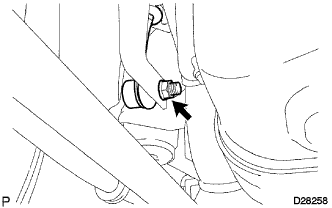
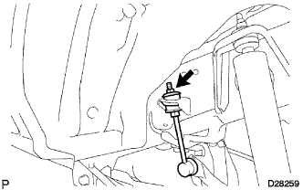
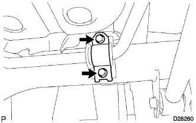

ЗАДНИЙ СТАБИЛИЗАТОР ПОПЕРЕЧНОЙ УСТОЙЧИВОСТИ (для моделей без KDSS) > СНЯТИЕ |
| 1. СНИМИТЕ ЗАДНЕЕ КОЛЕСО |
| 2. СНИМИТЕ ЛЕВУЮ СТОЙКУ ЗАДНЕГО СТАБИЛИЗАТОРА В СБОРЕ |
|  |
Отверните гайку и отсоедините штангу стабилизатора от стойки стабилизатора.
|  |
Зафиксируйте стойку стабилизатора гаечным ключом, а затем отверните гайку и снимите держатель, подушку и стойку.
Снимите 2 держателя и подушку со стойки стабилизатора.
| 3. СНИМИТЕ ПРАВУЮ СТОЙКУ ЗАДНЕГО СТАБИЛИЗАТОРА В СБОРЕ |
| 4. СНИМИТЕ ЗАДНИЙ СТАБИЛИЗАТОР |
|  |
Выверните 4 болта и снимите 2 кронштейна стабилизатора и штангу стабилизатора.
Снимите 2 втулки стабилизатора со стабилизатора.